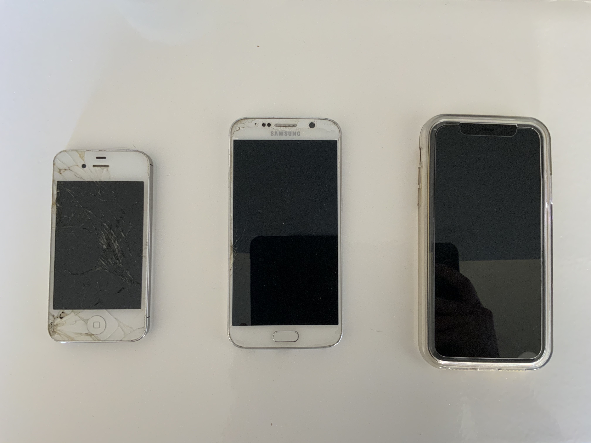
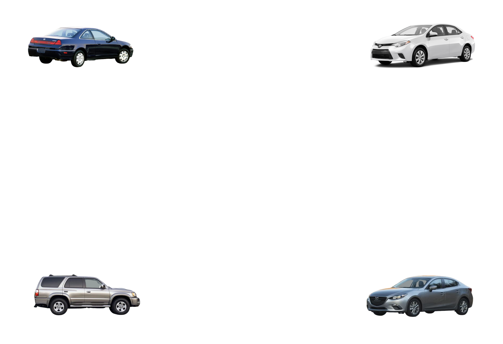

I think this article is very interesting and helpful to review when designing a game. I liked how it broke down the game into few components and gave examples to think about. There are designs that I am so used to that I didn't even realize they were there. I also liked how it gave few rules such as how intro videos should be no longer than 20 seconds. By reading over this article, I got a glimpse of how a good design keeps the users interactive and stays on the app. Such components as popups and rate us dialogs, are very common and users are very used to it, but it allows the creators to earn money from it.
Jinyoung Yang, 2021
This image is interesting because it includes the history of phones I had past 6 years. The phone from the left is iphone4, Samsung Galaxy S6, and Iphone 11. I think that the exterior of these phones and the models tell something about my personality. I have not been careful about phones and did not have any case for it, and then as years passed by, I became more careful about my phones. The phone I have now has a full case. This Image is the direct collection of the collection I have of my past phones.
Vivian Pham, 2021
This photo is about the different cars Vivian had before. I think what is interesting about this photo is that the four cars are all at the edge of the page. I think this may tell us the order of the cars she had before. I think that one person’s cars can tell a lot about that person. For example, it can tell what kind of aspects that person thinks is important when buying a car such as price, mpg, durability, brand, etc. The brands of these cars are pretty obvious, however, the timeline of these cars are not as obvious. I wonder if Vivian still has more than one of these cars right now, maybe one can be a family car. Also, I wonder which of these cars were or is her favorite.
This website uses a lot of interesting image strategies to draw the users in. It is an interactive website where the user will connect the camera and incorporate the user's image into the game. It is a simple game, where the user uses hands in the camera for the website to read and play rock, paper, scissors with another player. Even though it is a simple game, the website’s use of imagery and illustrations make it more intriguing and fun. For example, when you first enter the website, it brings up questions to what the website will be about. The illustration of big leaves, forest, and having a mysterious movement behind the leaves brings out the curiosity in users. When starting the game the leaves unfolds like a gate into the game. It is definitely a new and innovative game using new skills with the images.
I think this article is useful because it breaks down the website and gives few questions to ask myself such as: When do we show the modal?, How do we show the modal?, What does the modal look like?,What information do we present and collect?. I think this article will be nice to go back and go through each checklist to make sure that I have a good standard website. After reading this article, I have a better understanding of the components of a modal window and what makes a good modal window for the users. For example, escape hatch is a component that I did not think much about before, but now I have a better understanding of it.
I think this article provides a good skeleton for a comfortable design of websites. I liked how it provides information on how to approach the web design in certain situations. For example, on how to layout inputs of multiple information, and how adding multiple steps can be helpful. I also like how it breaks down the components of the website such as the dropdown menu, different buttons, texts, etc. It was a clear set of instructions to follow and these design patterns can be seen a lot in everyday websites I visit. I wish it had more information on how to use color to communicate information differently.